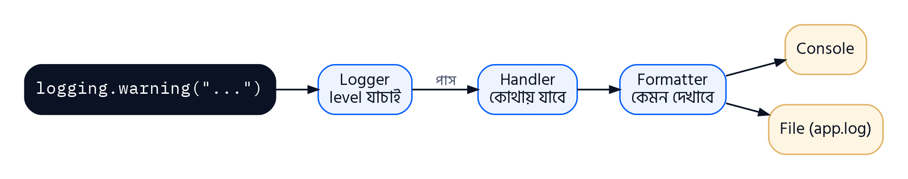

অধ্যায় ৮
Logging in Python
ধরো তোমার বানানো result management software একটা কলেজে চলছে। এক সপ্তাহ পর অভিযোগ এল: "মঙ্গলবার দুপুরে একজন ছাত্রের ফলাফল ভুল দেখিয়েছিল।" তুমি তো তখন সেখানে ছিলে না, screen-এ কী print হয়েছিল তাও দেখোনি। এখন কীভাবে খুঁজবে কী ঘটেছিল?
উত্তর হলো logging — program চলার সময় কী কী ঘটছে তার একটা স্থায়ী, সময়সহ রেকর্ড রাখা। এই অধ্যায়ে শিখব logging কী, কখন দরকার, logging-এর level, logging ভেতরে কীভাবে কাজ করে, আর কীভাবে log-এর গন্তব্য ও চেহারা ঠিক করতে হয়।
8.1 Logging কী?
print() থাকতে logging কেন?
| বিষয় | print() | logging |
|---|---|---|
| গন্তব্য | শুধু screen | screen, file, বা একসাথে দুটোই |
| গুরুত্বের মাত্রা | নেই — সব বার্তা সমান | DEBUG থেকে CRITICAL পর্যন্ত level |
| বন্ধ/চালু করা | প্রতিটা print মুছতে হয় | এক লাইনে level বদলে নিয়ন্ত্রণ |
| সময় ও উৎস | নিজে লিখতে হয় | স্বয়ংক্রিয়ভাবে যোগ করা যায় |
| স্থায়িত্ব | program বন্ধ হলে হারিয়ে যায় | file-এ স্থায়ীভাবে থাকে |
উদাহরণ 8.1প্রথম Log
সমস্যা: logging module দিয়ে তিনটা ভিন্ন গুরুত্বের বার্তা দাও।
1import logging
2
3logging.info("Program started")
4logging.warning("Disk space is low")
5logging.error("Could not open result.txt")
6print("Program finished")
WARNING:root:Disk space is low ERROR:root:Could not open result.txt Program finished
লাইন-বাই-লাইন ব্যাখ্যা
| 1 | import logging | logging একটা built-in module, install লাগে না। |
| 3 | logging.info("Program started") | info বার্তা দেখা যায়নি! কারণ default-ভাবে logging শুধু WARNING বা তার চেয়ে গুরুত্বপূর্ণ বার্তা দেখায় (8.3-এ বিস্তারিত)। |
| 4–5 | logging.warning("Disk space is low")
logging.error("Could not open result.txt") | default format: LEVEL:logger_name:message। root হলো default logger-এর নাম। |
8.2 কখন Logging দরকার
ছোট practice program-এ logging লাগে না। কিন্তু নিচের পরিস্থিতিগুলোতে logging প্রায় বাধ্যতামূলক:
| পরিস্থিতি | কেন logging | উদাহরণ বার্তা |
|---|---|---|
| Debugging | ভুলের উৎস খুঁজতে variable-এর মান ও প্রবাহ দেখা | DEBUG: average=72.5 for roll 101 |
| চলমান program পর্যবেক্ষণ | server বা দীর্ঘক্ষণ চলা program-এ কী হচ্ছে জানা | INFO: 150 results processed |
| Error খোঁজা | কখন, কোথায়, কেন error হলো তার রেকর্ড | ERROR: result.txt not found |
| Audit ও নিরাপত্তা | কে কখন কী করল তার প্রমাণ | WARNING: 3 failed logins for admin |
| Performance | কোন কাজে কত সময় লাগছে | INFO: report generated in 2.4s |
| ব্যবহারকারীর অভিযোগ যাচাই | অতীতের ঘটনা পুনর্গঠন | INFO: roll 101 result viewed |
উদাহরণ 8.2Login System-এ Logging
সমস্যা: একটা ছোট login function-এ সফল login, ভুল password আর অজানা ব্যবহারকারী — তিন পরিস্থিতিই log করো।
1import logging
2logging.basicConfig(level=logging.INFO, format="%(levelname)-8s %(message)s")
3
4users = {"rahim": "1234", "admin": "secure99"}
5
6def login(username, password):
7 if username not in users:
8 logging.warning("Unknown user tried to log in: %s", username)
9 return False
10 if users[username] != password:
11 logging.error("Wrong password for %s", username)
12 return False
13 logging.info("%s logged in successfully", username)
14 return True
15
16login("rahim", "1234")
17login("admin", "guess")
18login("hacker", "0000")
INFO rahim logged in successfully ERROR Wrong password for admin WARNING Unknown user tried to log in: hacker
লাইন-বাই-লাইন ব্যাখ্যা
| 2 | logging.basicConfig(level=logging.INFO, format="%(levelname)-8s %(message)s") | basicConfig দিয়ে level INFO করলাম যাতে info বার্তাও দেখা যায়, আর format ঠিক করলাম। %(levelname)-8s মানে level-এর নাম 8 ঘর জায়গা নেবে, ফলে বার্তাগুলো সোজা থাকে (8.5-এ বিস্তারিত)। |
| 8 | logging.warning("Unknown user tried to log in: %s", username) | logging-এ বার্তার মধ্যে মান বসাতে %s আর পরে argument দেওয়া প্রচলিত — f-string-ও চলে, কিন্তু এই পদ্ধতিতে বার্তা যদি দেখানো না-ই হয় তাহলে string তৈরির খরচটাও বাঁচে। |
| 16–18 | login("rahim", "1234")
login("admin", "guess")
login("hacker", "0000") | তিন পরিস্থিতির তিন রকম log। এই রেকর্ড file-এ রাখলে পরে বোঝা যাবে কেউ admin-এর password আন্দাজ করার চেষ্টা করেছিল কিনা। |
8.3 Logging-এর Level
সব বার্তা সমান গুরুত্বপূর্ণ নয়। "function শুরু হলো" আর "database নষ্ট হয়ে গেছে" — দুটো এক জিনিস না। তাই logging-এ পাঁচটা level আছে, প্রতিটার একটা সংখ্যামান:
| Level | মান | কখন ব্যবহার | উদাহরণ |
|---|---|---|---|
| DEBUG | 10 | খুঁটিনাটি তথ্য, শুধু ভুল খোঁজার সময় দরকার | loop-এ i=3, total=210 |
| INFO | 20 | সবকিছু স্বাভাবিকভাবে চলছে তার নিশ্চয়তা | Report saved |
| WARNING | 30 | অপ্রত্যাশিত কিছু, তবে program চলছে (default level) | Disk 90% full |
| ERROR | 40 | একটা কাজ ব্যর্থ হয়েছে | File not found |
| CRITICAL | 50 | গুরুতর সমস্যা, program আর চলতে পারবে না | Database unreachable |
নিয়ম সহজ: নির্ধারিত level-এর সমান বা তার বেশি মানের বার্তাই দেখানো হয়। Default level WARNING (30), তাই DEBUG (10) আর INFO (20) বাদ পড়ে।
উদাহরণ 8.3Level বদলে দেখা
সমস্যা: level DEBUG করে পাঁচটা level-এরই বার্তা দাও, তারপর level বদলালে কী হয় দেখো।
1import logging
2logging.basicConfig(level=logging.DEBUG, format="%(levelname)s (%(levelno)s): %(message)s")
3
4logging.debug("Variable x = 42")
5logging.info("Saving results")
6logging.warning("Marks missing for roll 104")
7logging.error("Cannot open marks.csv")
8logging.critical("Out of memory, shutting down")
9
10logging.getLogger().setLevel(logging.ERROR)
11logging.warning("This warning is now hidden")
12logging.error("Only ERROR and above appear now")
DEBUG (10): Variable x = 42 INFO (20): Saving results WARNING (30): Marks missing for roll 104 ERROR (40): Cannot open marks.csv CRITICAL (50): Out of memory, shutting down ERROR (40): Only ERROR and above appear now
লাইন-বাই-লাইন ব্যাখ্যা
| 2 | logging.basicConfig(level=logging.DEBUG, format="%(levelname)s (%(levelno)s): %(message)s") | level=DEBUG মানে সবচেয়ে নিচের level থেকেই সব দেখাও। %(levelno)s level-এর সংখ্যামান দেখায়। |
| 4–8 | logging.debug("Variable x = 42")
logging.info("Saving results")
logging.warning("Marks missing for roll 104")
logging.error("Cannot open marks.csv")
logging.critical("Out of memory, shutting down") | পাঁচটা level-এর জন্য পাঁচটা function। |
| 10 | logging.getLogger().setLevel(logging.ERROR) | program চলার মাঝেই level ERROR করা হলো। |
| 11–12 | logging.warning("This warning is now hidden")
logging.error("Only ERROR and above appear now") | এখন WARNING (30) < ERROR (40), তাই warning বাদ; error দেখাচ্ছে। বাস্তবে development-এর সময় DEBUG রাখা হয়, আর ব্যবহারকারীর কাছে দেওয়ার সময় WARNING বা ERROR — কোডের একটা লাইনও না মুছে। |
8.4 Logging-এর কার্যপদ্ধতি
logging.warning("...") লিখলে ভেতরে চারটা অংশ মিলে কাজ করে:

| অংশ | কাজ |
|---|---|
| Logger | যে object-এর মাধ্যমে বার্তা পাঠানো হয়। নিজের level-এর কম গুরুত্বের বার্তা এখানেই বাদ পড়ে। logging.getLogger(name) দিয়ে পাওয়া যায়। |
| LogRecord | প্রতিটা বার্তার জন্য তৈরি object — এতে সময়, level, logger-এর নাম, file, লাইন নম্বর, বার্তা সব থাকে। |
| Handler | বার্তা কোথায় যাবে ঠিক করে: StreamHandler (console), FileHandler (file)। প্রতিটা handler-এর নিজস্ব level থাকতে পারে। |
| Formatter | বার্তাটা দেখতে কেমন হবে ঠিক করে — কোন তথ্য, কোন ক্রমে। |
ধাপগুলো: (১) কোড logger-কে বার্তা দেয় → (২) logger নিজের level যাচাই করে, কম হলে বাদ → (৩) LogRecord তৈরি হয় → (৪) logger-এর প্রতিটা handler record পায়, নিজের level যাচাই করে → (৫) handler-এর formatter record-কে লেখায় পরিণত করে → (৬) handler সেটা গন্তব্যে (console/file) লেখে।
উদাহরণ 8.4Logger, Handler ও Formatter নিজে তৈরি
সমস্যা: একটা logger বানাও যার দুটো handler: console-এ শুধু WARNING বা বেশি, আর file-এ DEBUG থেকে সব।
1import logging
2
3logger = logging.getLogger("result_app")
4logger.setLevel(logging.DEBUG)
5
6console = logging.StreamHandler()
7console.setLevel(logging.WARNING)
8console.setFormatter(logging.Formatter("CONSOLE | %(levelname)s | %(message)s"))
9
10file = logging.FileHandler("app.log", mode="w")
11file.setLevel(logging.DEBUG)
12file.setFormatter(logging.Formatter("%(name)s - %(levelname)s - %(message)s"))
13
14logger.addHandler(console)
15logger.addHandler(file)
16
17logger.debug("Reading marks for roll 101")
18logger.info("Average calculated: 75.0")
19logger.warning("Roll 103 failed in Physics")
20
21print("--- app.log contains ---")
22print(open("app.log").read())
CONSOLE | WARNING | Roll 103 failed in Physics --- app.log contains --- result_app - DEBUG - Reading marks for roll 101 result_app - INFO - Average calculated: 75.0 result_app - WARNING - Roll 103 failed in Physics
লাইন-বাই-লাইন ব্যাখ্যা
| 3–4 | logger = logging.getLogger("result_app")
logger.setLevel(logging.DEBUG) | "result_app" নামে logger, level DEBUG — logger নিজে কিছুই বাদ দেবে না। |
| 6–8 | console = logging.StreamHandler()
console.setLevel(logging.WARNING)
console.setFormatter(logging.Formatter("CONSOLE | %(levelname)s | %(message)s")) | Console handler: level WARNING, নিজস্ব format। |
| 10–12 | file = logging.FileHandler("app.log", mode="w")
file.setLevel(logging.DEBUG)
file.setFormatter(logging.Formatter("%(name)s - %(levelname)s - %(message)s")) | File handler: app.log-এ লিখবে, level DEBUG, আলাদা format। mode="w" মানে প্রতিবার নতুন file। |
| 14–15 | logger.addHandler(console) logger.addHandler(file) | দুটো handler logger-এর সাথে যুক্ত হলো। |
| 17–19 | logger.debug("Reading marks for roll 101")
logger.info("Average calculated: 75.0")
logger.warning("Roll 103 failed in Physics") | তিনটা বার্তা। console-এ শুধু warning দেখা গেল, কিন্তু file-এ তিনটাই — একই বার্তা, দুই handler, দুই ফল। |
8.5 Configuration ও Output Formatting
ছোট ও মাঝারি program-এর জন্য সবচেয়ে সহজ configuration হলো logging.basicConfig() — এক লাইনেই level, format, গন্তব্য সব ঠিক করা যায়।
| Parameter | কাজ | উদাহরণ |
|---|---|---|
| level | সর্বনিম্ন level | level=logging.INFO |
| format | প্রতিটা লাইনের চেহারা | format="%(levelname)s: %(message)s" |
| datefmt | asctime-এর তারিখ-সময়ের ধরন | datefmt="%d-%m-%Y %H:%M" |
| filename | console-এর বদলে file-এ লেখা | filename="app.log" |
| filemode | file-এর mode (default "a") | filemode="w" |
Format-এ ব্যবহৃত Attribute
| Attribute | কী দেখায় |
|---|---|
| %(asctime)s | বার্তার সময় |
| %(levelname)s | level-এর নাম (INFO, ERROR …) |
| %(message)s | আসল বার্তা |
| %(name)s | logger-এর নাম |
| %(filename)s | যে file থেকে log হয়েছে |
| %(funcName)s | যে function থেকে log হয়েছে |
| %(lineno)d | লাইন নম্বর |
উদাহরণ 8.5পূর্ণ Configuration: File-এ সময়সহ Log
সমস্যা: basicConfig দিয়ে সময়, level, function-এর নাম আর লাইন নম্বরসহ log একটা file-এ লেখো, তারপর file পড়ে দেখাও।
1import logging
2
3logging.basicConfig(
4 filename="result.log",
5 filemode="w",
6 level=logging.DEBUG,
7 format="%(asctime)s | %(levelname)-7s | %(funcName)s:%(lineno)d | %(message)s",
8 datefmt="%d-%m-%Y %H:%M:%S",
9)
10
11def calculate(marks):
12 logging.debug("Received marks %s", marks)
13 if not marks:
14 logging.error("Empty marks list")
15 return None
16 avg = sum(marks) / len(marks)
17 logging.info("Average = %.2f", avg)
18 return avg
19
20calculate([78, 85, 62])
21calculate([])
22
23with open("result.log") as f:
24 print(f.read())
05-10-2026 09:36:23 | DEBUG | calculate:12 | Received marks [78, 85, 62] 05-10-2026 09:36:23 | INFO | calculate:17 | Average = 75.00 05-10-2026 09:36:23 | DEBUG | calculate:12 | Received marks [] 05-10-2026 09:36:23 | ERROR | calculate:14 | Empty marks list
লাইন-বাই-লাইন ব্যাখ্যা
| 3–9 | logging.basicConfig(
filename="result.log",
filemode="w",
level=logging.DEBUG,
format="%(asctime)s | %(levelname)-7s | %(funcName)s:%(lineno)d | %(message)s",
datefmt="%d-%m-%Y %H:%M:%S",
) | filename দেওয়ায় console-এ কিছু যায়নি, সব result.log-এ। format-এ পাঁচটা attribute; %(levelname)-7s level-কে 7 ঘরে বাঁ দিকে বসায়। |
| 12–17 | logging.debug("Received marks %s", marks)
if not marks:
logging.error("Empty marks list")
return None
avg = sum(marks) / len(marks)
logging.info("Average = %.2f", avg) | প্রতিটা log-এর সাথে function-এর নাম (calculate) আর লাইন নম্বর স্বয়ংক্রিয়ভাবে যুক্ত হয়েছে — কোডের ঠিক কোথা থেকে বার্তা এল বোঝা যায়। |
| 23–24 | with open("result.log") as f:
print(f.read()) | file পড়ে দেখানো। সময়ের অংশ তুমি যখন চালাবে তখনকার সময় দেখাবে। |
অধ্যায়ের সারসংক্ষেপ
| বিষয় | মূল কথা |
|---|---|
| Logging | program চলার সময়ের ঘটনার সময়সহ স্থায়ী রেকর্ড; built-in logging module। |
| কখন | Debugging, পর্যবেক্ষণ, error খোঁজা, audit/নিরাপত্তা, performance মাপা। |
| Level | DEBUG 10, INFO 20, WARNING 30 (default), ERROR 40, CRITICAL 50; নির্ধারিত level বা বেশি দেখায়। |
| কার্যপদ্ধতি | Logger → LogRecord → Handler → Formatter → গন্তব্য (console/file)। |
| Configuration | basicConfig(level, format, datefmt, filename, filemode); শুরুতেই ডাকতে হয়। |
অনুশীলনী · অধ্যায় ৮ (বোর্ড প্রশ্ন ও উত্তর)
PDF ক্রেতাদের জন্য
অনুশীলনী ও বোর্ড প্রশ্নের উত্তর লক করা
PDF কিনলে একটা আনলক কোড পাবে — কোডটা দিলেই এই পাতার অনুশীলনী আর বোর্ড প্রশ্নের উত্তর খুলে যাবে। প্রতিবার পাতা খুললে কোডটা দিতে হবে।
- সব অধ্যায়ের অনুশীলনী
- বোর্ড প্রশ্নের উত্তর
- কোড ছাড়া খোলে না
PDF কিনতে Facebook-এ মেসেজ দাও · facebook.com/kazitauhidrana ↗
প্রথম ২টি অধ্যায়ের অনুশীলনী সবার জন্য খোলা
এই অধ্যায় কেমন লাগল?
তোমার মতামত সরাসরি লেখকের কাছে যাবে। ভুল পেলে কোন section-এ, সেটাও লিখে দিও।